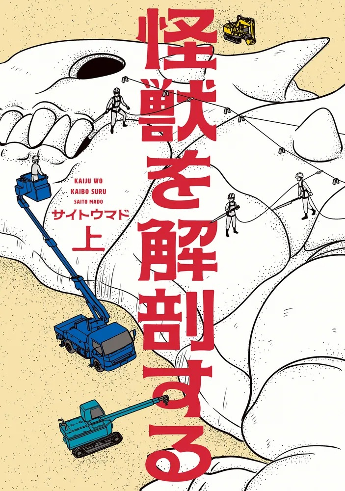
巨大怪獸「東京」倒下後，怪獸學者本多昭被叫去解剖這具全長約 210 公尺、8.5 萬噸的屍體，卻開始懷疑牠真的死了嗎。整部漫畫把「怎麼解剖一隻怪獸」講得像真的科學調查，兩本就完結，很適合喜歡硬設定、又想一口氣看完的人。
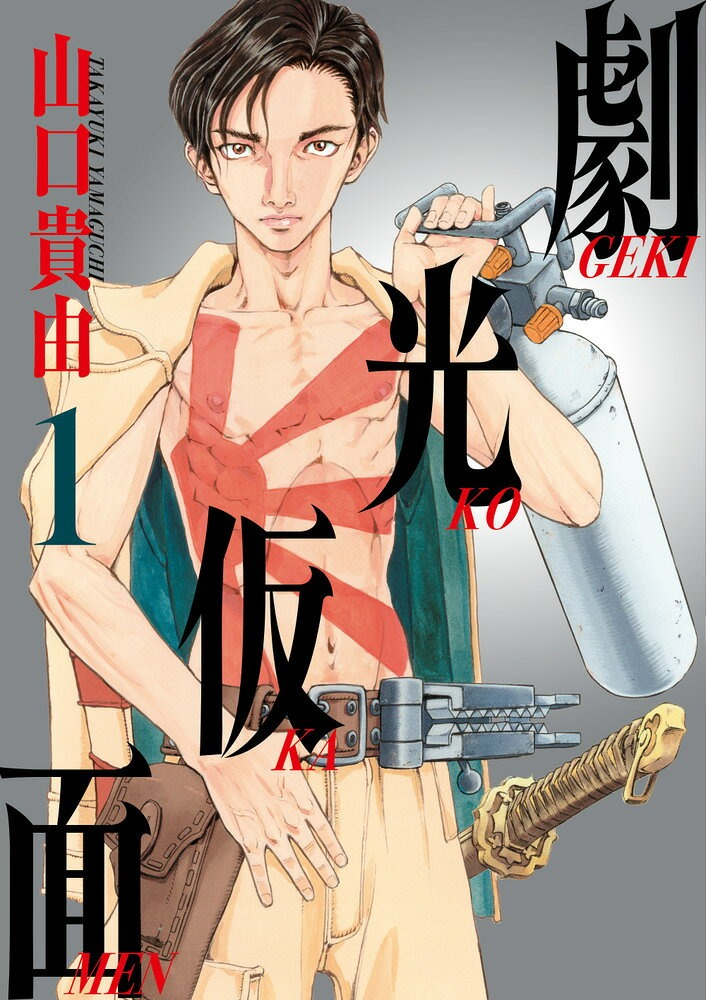
《シグルイ》作者的特攝讚歌。29 歲打工族實相寺二矢，在大學特攝社的老同伴過世後和當年社員重逢，從此把「穿上自製英雄裝」這件事越玩越認真，最新卷甚至對上闖進高樓的巨熊。畫風極度濃烈，有血腥場面，適合喜歡重口味、又對特攝有感情的大人。
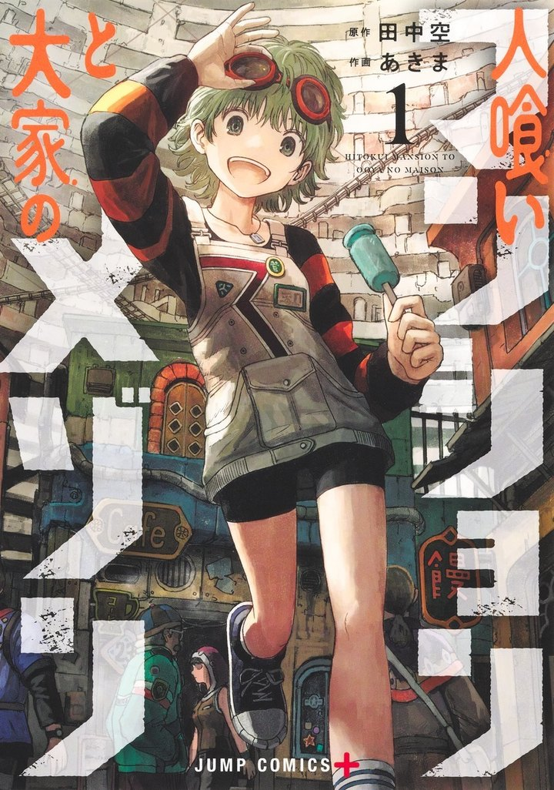
地球毀滅前 1 秒，人類躲進一棟時間永遠停住的「公寓」生活；天生就是房東的少女梅森，一步步揭開公寓的秘密。原作是《タテの国》的田中空，世界觀很怪也很大，適合喜歡奇想 SF 冒險的人。
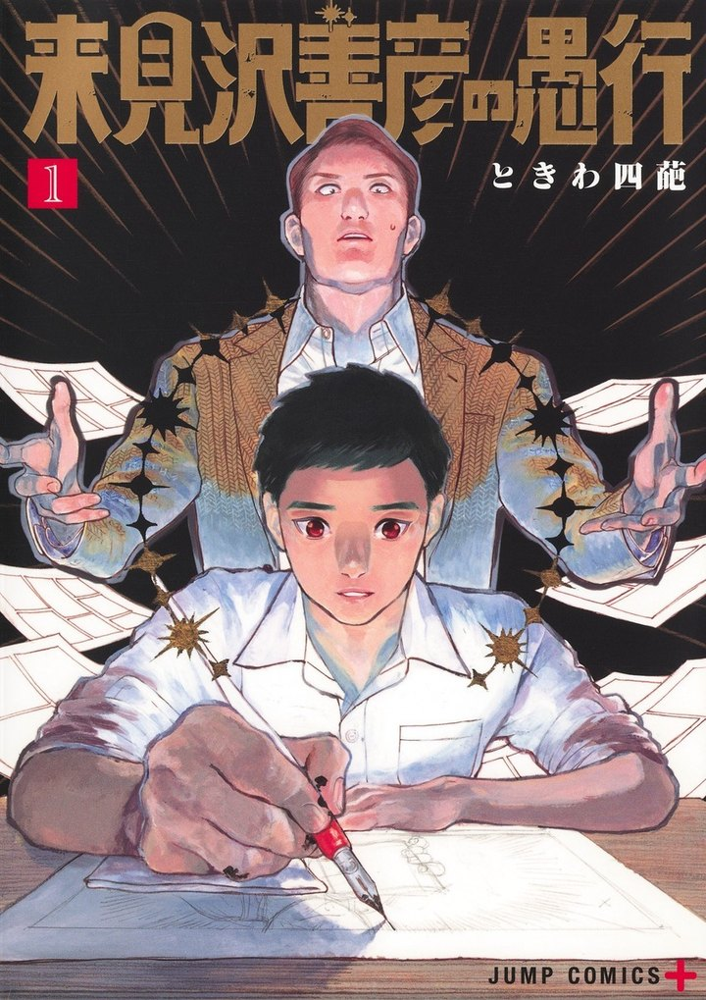
1971 年的少年漫畫界，過氣名家來見澤找不到新點子，於是騙了一個有才華的年輕人當他的影子寫手，想靠別人的作品東山再起。謊言越滾越大，緊張感十足，適合喜歡《爆漫王》這類業界題材、又想看人性黑暗面的人。
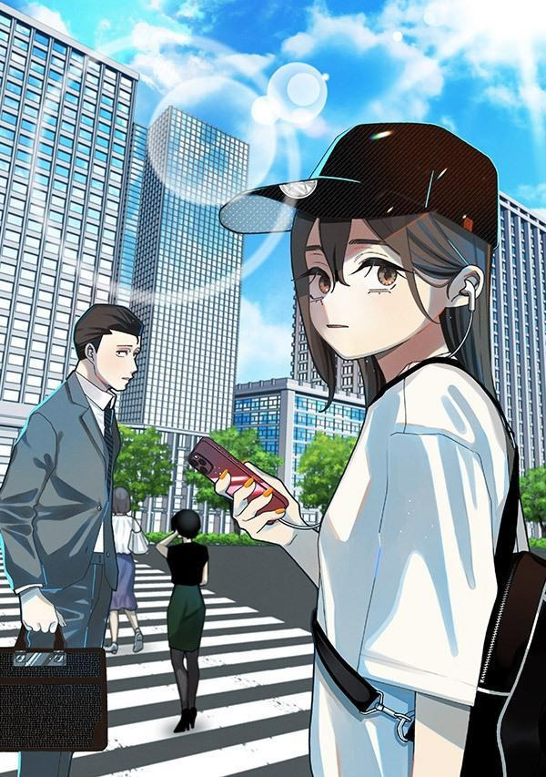
哥哥在公司是沒表情、被嫌無聊的上班族，其實是傳說級的投稿職人「フルーツパフェ」，全世界只有妹妹知道他有多好笑。笑點建立在「只有讀者和妹妹懂」的落差上，每話短、很好入坑，適合想輕鬆看的時候。
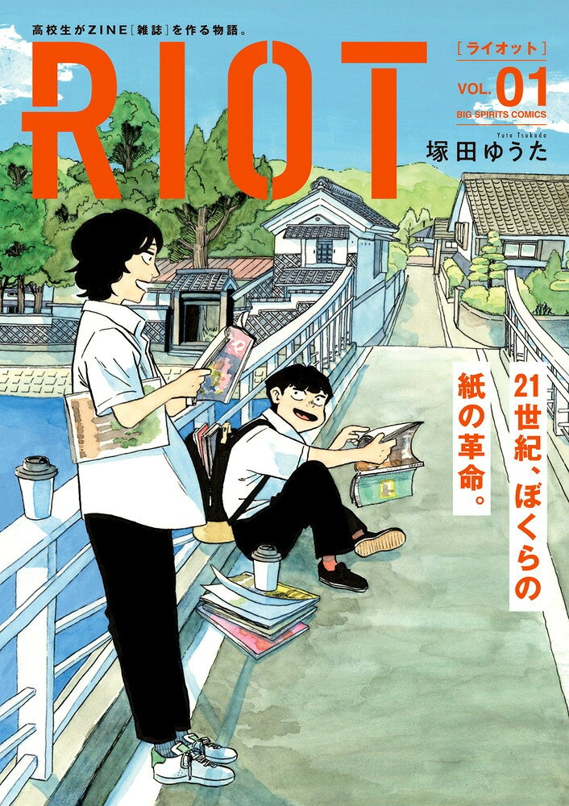
海邊小鎮沒有書店也沒有唱片行，兩個不是班上主角的高中生，卻莫名迷上「紙本雜誌」，乾脆自己動手做一本。這是一部安靜但很熱血的文化系青春漫畫，適合喜歡做東西、或曾經想自己辦刊物的人。
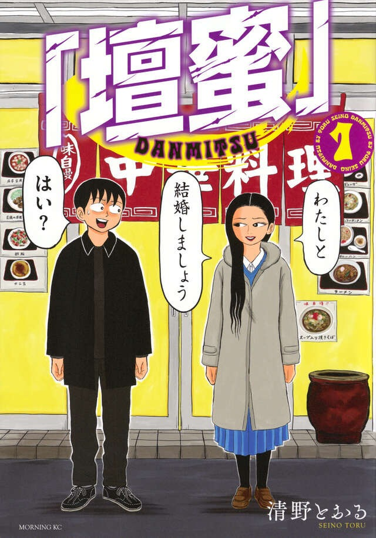
冷門漫畫家清野とおる畫自己和超人氣藝人壇蜜交往、結婚的真實紀錄。兩個完全不搭的人怎麼變成夫妻，日常又詭異又好笑，適合喜歡隨筆漫畫和怪人觀察的人。
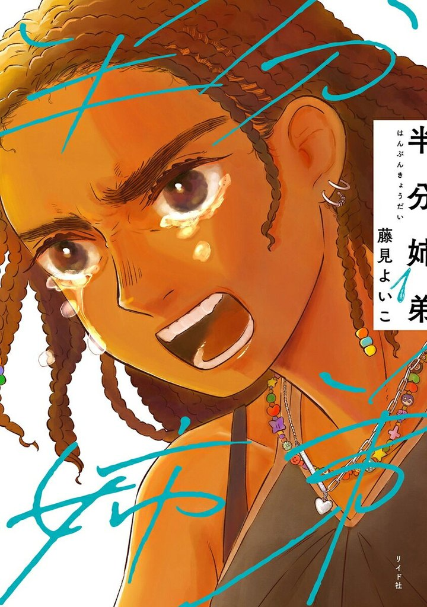
法日混血的米山和美マンダンダ，某天被弟弟告知「我改名了」。故事寫在日本長大、卻一直被當成外人的「混血兒」們，連說錯話的人的後悔也寫進去。不說教、很有溫度，適合喜歡《違國日記》這類人際群像的人。
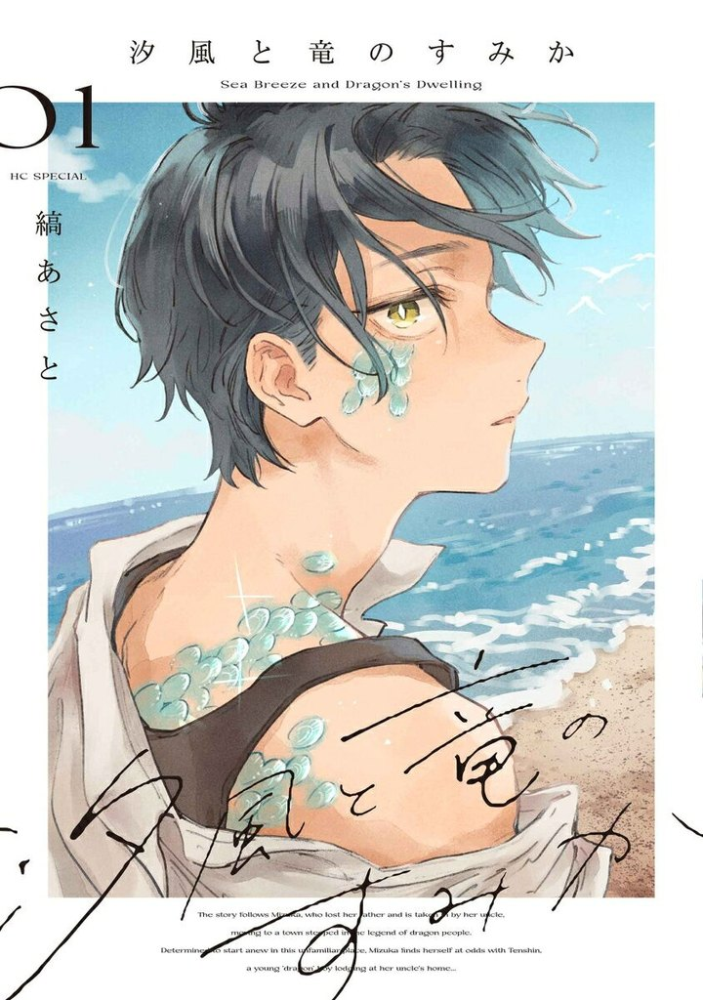
父親過世後，瑞花搬到有龍人傳說的海邊小鎮，和寄住在叔叔家的龍人少年天辰住在同一個屋簷下。從互看不順眼到慢慢靠近，海風感的畫面很美，適合喜歡奇幻加戀愛、節奏慢慢來的人。
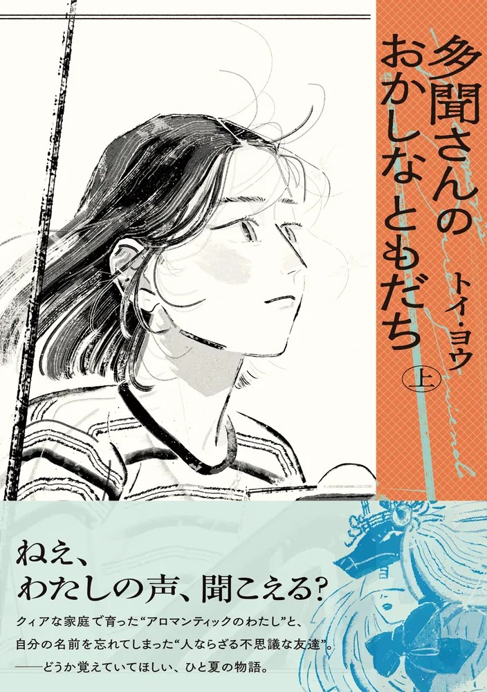
在兩位母親身邊長大的內日，在大阪的某個夏天，和一個「忘了自己名字、別人看不見的朋友」相遇。用一點點超自然，溫柔地寫性少數家庭的記憶和日常，兩本完結，適合想看安靜好故事的人。
地方都市四口之家錦久家的普通日常，像送爺爺去日照、三方面談，被老牌鬼才榎本俊二畫成荒誕又壯觀的大場面。看似什麼事都沒發生，卻越看越有幸福感，適合想看「漫畫還能這樣畫」的人。
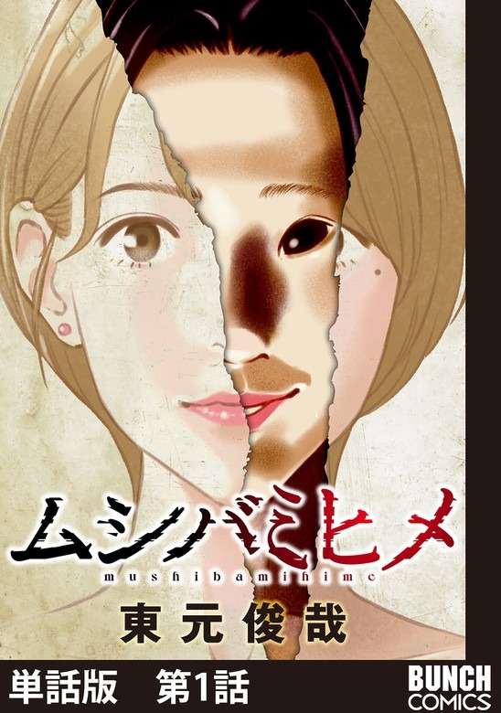
想當小說家的大學生田中愛，透過網站找到室友山口美羽，同居生活從這裡開始走樣。《忒修斯之船》作者的新作，恐怖來自人而不是鬼，適合喜歡心理驚悚、一路想猜真相的人。
窩在家養病的小說家コモリ，走進一家專收心靈受傷者的咖啡館，遇到因叛亂罪被罰勞役的惡魔老闆ダン。《少女ファイト》作者的新作，用奇怪角色寫心裡的牢籠和自由，適合最近有點累的人。
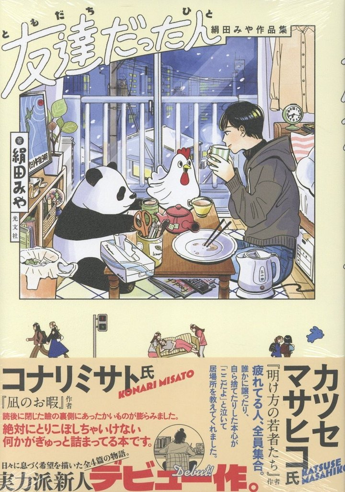
表題作寫主角去參加一位只在社群上認識、連本名都不知道的朋友的葬禮。全書 4 篇，都是很「現在」的小故事，讀完會想起某個人，適合睡前一篇慢慢看。